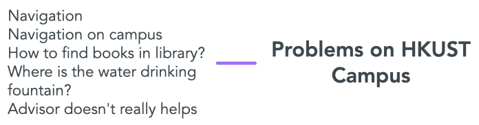
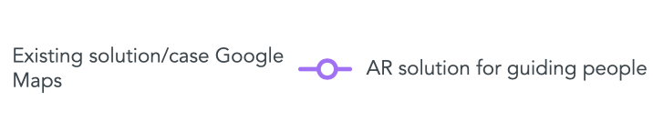
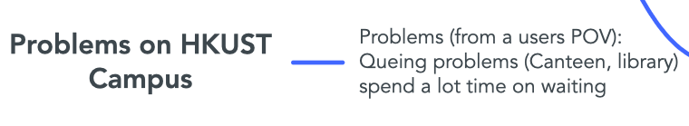
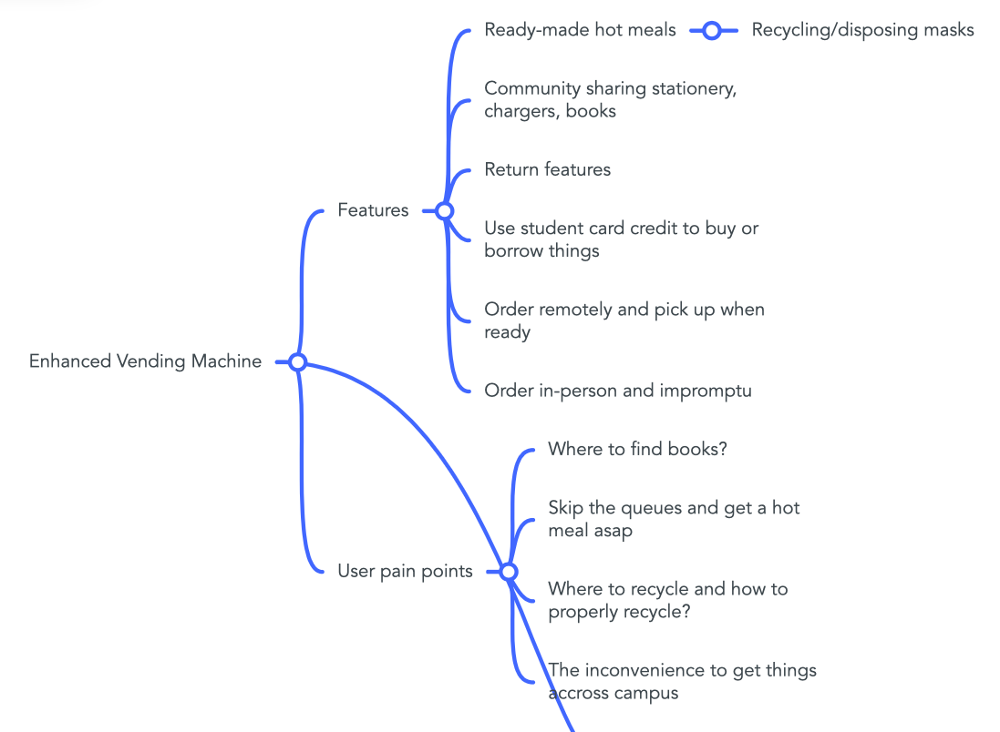

I'm a year 3 Computer Science undergraduate from HKUST. I share interest in web technologies, internet communication as well as cyber security. In addition to my interest of the programming-heavy areas of Computer Science, I also am heavily emgaged with the Human Computer Interaction theory. It teaches us how to present our ideas in a pleasing way. Compared to the forever shifting programming technologies, It is something that will never change or fade away.
In addition to my education background, I also share over a year of experience working as a web developer. In my career, I primarily work on developing highly interactive web application with some of the most popular web technologies/frameworks in the market. Apart from development and deployment of different projects, I also share the experience on designing UI/UX of some applications. I am ready and eager to learn every aspect of web development.
At the beginning of our disscusion several problems on the campus were being addressed.
First is the navigation problem. As campus is huge and the structure is complicated, it is often difficult to locate a room and sometime get lose before midterm/exams. Even there is exist solution to this problem, the Path Advisor, most people agree that it isn't really a effective solution to the navigation problem, as the direction indication could often could confusing in the app.
One solution that we have proposed is the use AR technology to help the student in directing to their desired destination.
Mindmap - Navigation problem 
Mindmap - Navigation solution 
Another campus problem that was being addressed is the queueing problem, as we also find that queueing in canteen or library is also a painful process that we often have to face.
The proposed solution is the enhanced vending machine.
Mindmap - Queing problems 
Mindmap - Queing Solution 
The last campus problem, which is the one we develop our project from, is the landry room problem. Multiple studentsThis video demonstrates the user flow of all features that we designed on our app.
Despite it is the first project in HCI course and my group have worked for only a week of time, I have already gain a lot and putting different HCI theories in practice when completing this projection. As my role in this project is to complete the paper prototype as well as the prototype video